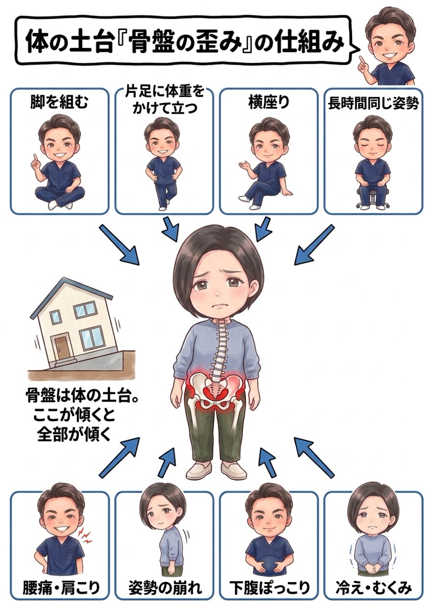

骨盤は、家でいえば「基礎（土台）」。ここが傾けば、その上に建つ背骨も、肩も、首も、すべてが傾きます。当院がすべての施術で骨盤を重視する理由を、図解でお話しします。

RESERVATION
まずは、あなたの骨盤の「今」をチェックしませんか？
骨盤は、上半身と下半身をつなぐ身体の中心＝土台です。家の基礎が傾けば、その上の柱も壁も屋根もすべて傾くのと同じで、骨盤が前後に傾いたり左右にねじれたりすると、その上に乗る背骨がバランスを取ろうと曲がり、全身の筋肉の一部に負担が集中します。
その結果として現れるのが、腰痛・お尻や脚の痛み、肩こり・首こり・頭痛、猫背や反り腰、下腹のぽっこり、冷え・むくみ・生理痛の悪化——。一見バラバラなこれらの不調が、「土台の傾き」というひとつの原因でつながっているケースが非常に多いのです。

骨盤の歪みは、特別な事故ではなく毎日の何気ないクセの積み重ねで起こります。脚を組む、片足に体重をかけて立つ、横座り、長時間の運転やデスクワーク、産後の骨盤の緩み、運動不足による筋力低下——。骨盤を正しい位置に保つのは周囲の筋肉の仕事ですが、クセで一方向に引っ張られ続けた筋肉はその形で固まり、「歪んだ状態がその人の普通」になってしまいます。だから、意識だけでは戻せないのです。

「脚を組まないように意識して」「良い姿勢を意識して」——よく言われます。でも、考えてみてください。意識しただけで、筋肉はつきますか？ つきません。意識しただけで、痩せますか？ 痩せません。では、意識しただけで骨盤は整いますか？ ——整いません。
骨盤を歪んだ位置で固めている筋肉のクセをそのままにして、意識だけで骨盤を正しく保ち続けるのは不可能です。気づけばまた脚を組んでいるのが、その証拠です。
では、どうすればいいのか。答えはひとつです。体の仕組みと原因を突き止め、その体に合った具体的な施術と姿勢改善メニューを「継続」する。これに尽きます。 ダイエットが食事メニューの継続で、トレーニングが筋トレメニューの継続で結果を出すのと、まったく同じ。原因に合った正しいことを続ける——それだけが、骨盤を本当に整える道です。
原因である骨盤や深部の筋肉へのアプローチは、必ずしも“気持ちいい場所”への施術ではありません。でもそれこそが、あらゆる不調の土台を変えるために本当に必要な一手です。とはいえ、今つらい腰や肩の張りを我慢してもらうつもりはありません。「今のつらさへの対応」と「原因への一手」を、必ずセットで行います。気持ちいいマッサージ“だけ”で終われば、それは対症療法。その場は楽でも、土台が傾いたままでは必ず戻るからです。
原因は、あなたの体そのものではなくあなたの“生活”の中にあります。脚を組むクセ、座り方、立ち方、運動習慣——この生活習慣そのものに、根本改善のカギがあります。だから当院は、症状だけでなくあなたの生活そのものをとことん深くお聞きし、原因が潜む習慣にメスを入れます。ここまで踏み込む接骨院・整体は多くありません。これが当院の考える“本当の根本治療”です。
ボキボキが苦手・怖い方へ。筋肉をゆるめてから関節を正しい位置へ導く、刺激の少ないやさしい矯正です。
「ボキボキしてスッキリしたい」「あの爽快感が好き」という方へ。しっかり音の鳴るダイナミックな矯正も、当院の得意技です。
「ボキボキしてくれる整体を探していた」という方も、ぜひご相談ください。ご希望とお身体の状態に合わせて、最適な方をお選びいただけます。
骨盤を歪んだ位置で固めている、硬くなった筋肉を先に丁寧に緩めます。ここを飛ばして骨だけ動かしても、すぐ戻ってしまいます。
そのうえで関節を正しい位置へ導き、土台を整えます。施術前後の変化はその場でご確認いただけます。
ここを変えなければ必ず戻ります。座り方・立ち方・脚を組むクセの対策、正しい位置を保つセルフケアまで具体的にお伝えし、継続をサポートします。

症状・生活習慣・座り方のクセなどを丁寧にヒアリング。骨盤を歪ませている「犯人」を一緒に探します。

骨盤の傾き（前傾・後傾）、左右差、ねじれをチェックし、画像を使ってわかりやすくご説明します。

筋肉をゆるめてから骨盤を矯正。正しい位置を保つためのセルフケアと通院プランをご提案します。
1回でも変化は感じられますが、骨盤は日々のクセで元に戻ろうとします。初期は週1回程度の矯正で正しい位置を身体に覚えさせ、その後メンテナンスへ移行するのが定着への近道です。生活習慣の改善とセットで“継続”することが大切です。
はい。ボキボキしないソフト矯正と、しっかり音の鳴るダイナミック矯正（ボキボキ）の両方をご用意しています。苦手な方はソフト矯正で無理なく整えますのでご安心ください。
もちろんです。骨盤の歪みは性別に関係なく、デスクワークや立ち仕事の男性にも多く見られます。腰痛・姿勢改善目的の男性のお客様も多数お越しいただいています。
筋肉をゆるめてから関節を正しい位置へ導くソフトな矯正が基本で、痛みを我慢させるような施術は行いません。ご希望に応じてダイナミックな矯正も選べます。